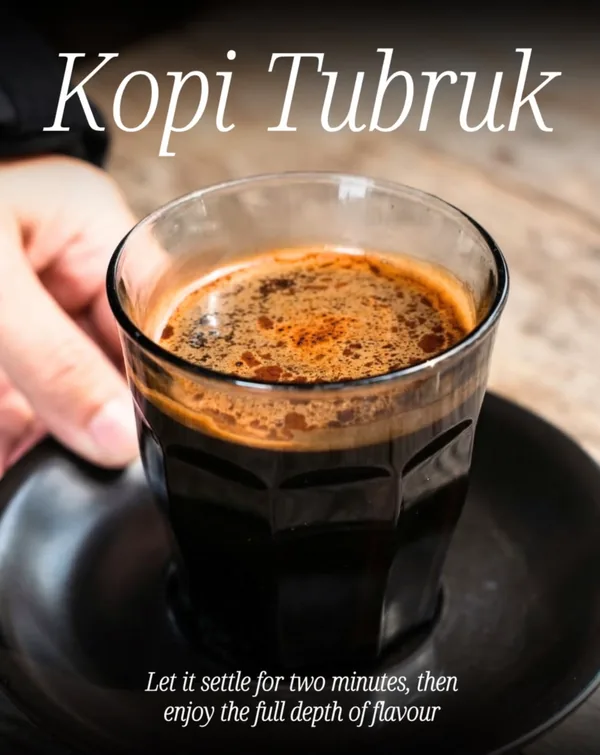
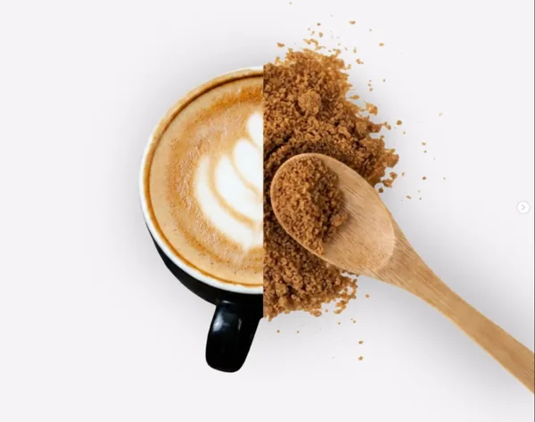
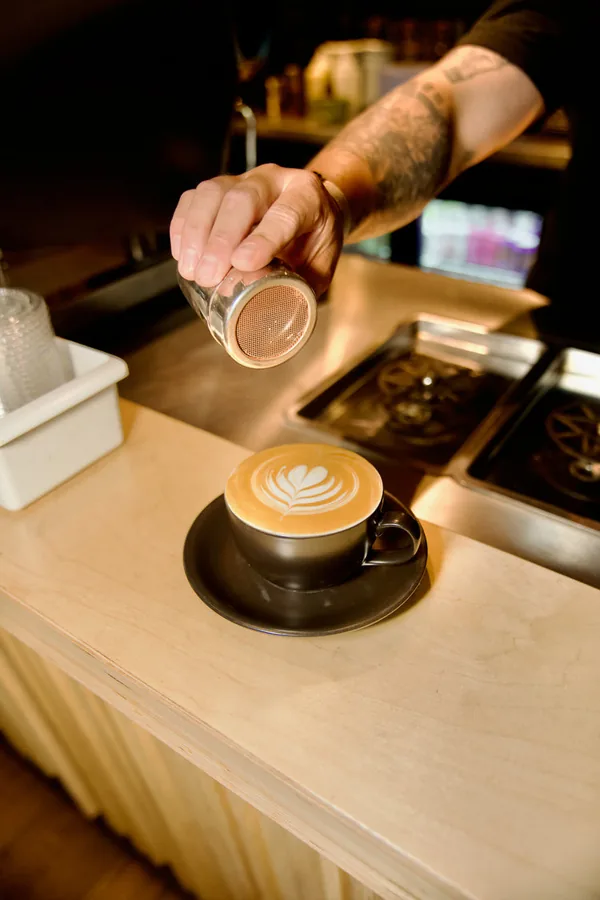
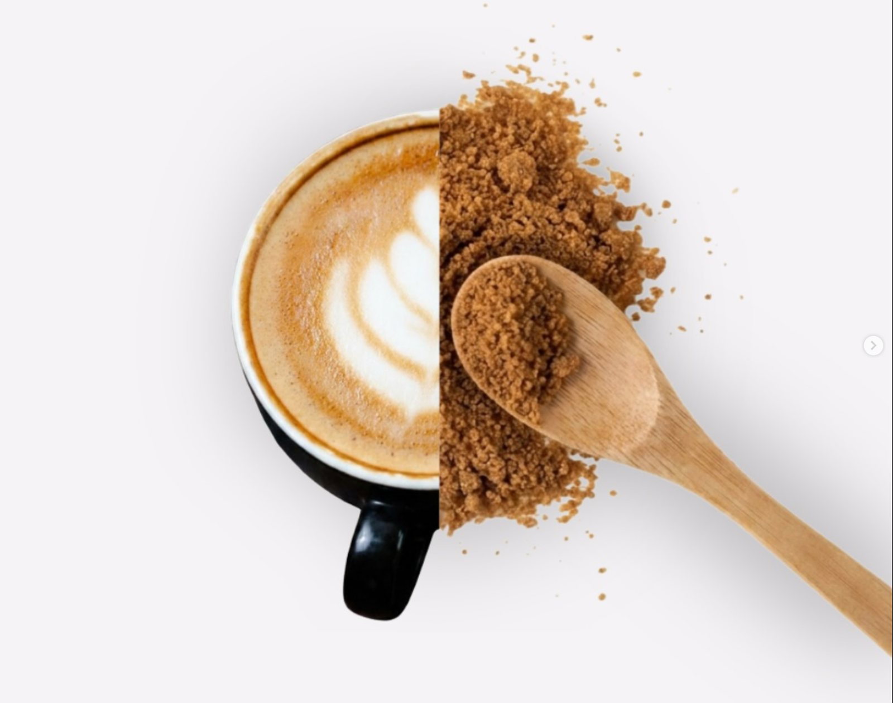

Poured the Indonesian way.
Kopi tubruk, Kopi Susu and the Arenga Latte carry Indonesian coffee traditions to our Piccadilly counter, with a Honey Cinnamon Latte and a turmeric drink for when the mood calls for something else.
Grounds in the glass.
Kopi tubruk keeps it simple: finely ground coffee goes straight into the cup. No paper, no machine.
Hot water on top.
Water just off the boil, poured over and stirred once, the way it is made in kitchens and warung across Indonesia.
Let it settle.
Give it a minute. The grounds sink to the bottom and the coffee clears above them.
Sip, slowly.
Drink from the top and leave the grounds behind. New to it? Our baristas will happily show you.
A different cup from every island.
Indonesian coffees change with the region they grow in and how they are processed: some run deep and earthy, others bright with fruit, cacao or citrus.
Our brews let you taste the difference at the counter. Ask which beans we are pouring today; every coffee’s origin and notes are in our shop too.
Kopi Susu: simply, coffee with milk.
A familiar name on every Indonesian café menu, and one of the drinks we are proudest of. Ask our team how we make it and which coffee is in it today.
The Arenga Latte.
Arenga is Indonesian palm sugar, gula aren: long part of traditional food and drink, and now a favourite of the country’s coffee shops.
Our Arenga Latte brings that warm, caramel sweetness to Piccadilly. Ask about it hot or iced.

Off the coffee menu.
Honey Cinnamon Latte
Honey and cinnamon for a little sweetness and spice. One guest’s favourite before a morning of work or a catch-up with friends.
Our turmeric drink
For when you would rather skip the coffee. Ask the team about its flavour, its ingredients and any dietary questions.
Something on the side
Cakes, pastries and light bites, Indonesian treats beside European favourites. Ask what is out today.
Try it at St James’s Market.
2a St James’s Market, two minutes from Piccadilly Circus.